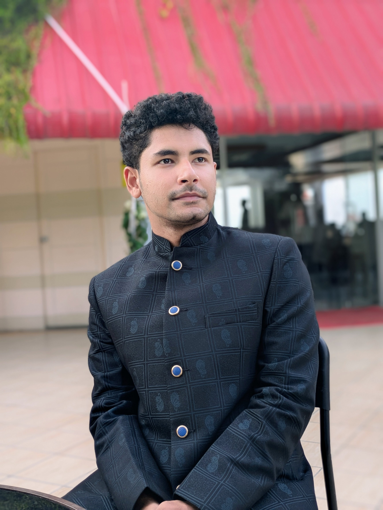

Engineering
& Technology
My academic journey in Biomedical Engineering sits alongside a broader interest in technical learning and understanding how things work.
01A PERSONAL PORTRAIT · JOBAYER HAMJA
An engineer in the making, an artist by instinct, and an observer of life's many stories.
A LITTLE MORE ABOUT ME
01 A FEW LINES, TO BEGIN
An engineer in the making, an artist by instinct, and an observer of life's many stories.
I find my place somewhere between logic and imagination, constantly exploring, creating, and evolving.
Not merely passing through chapters, but shaping them with curiosity, intention, and a little bit of wonder.
02 THE MANY SIDES OF ME
Different interests can sit side by side. Here are a few that make up my days and the way I look at the world.
My academic journey in Biomedical Engineering sits alongside a broader interest in technical learning and understanding how things work.
01Singing, recording karaoke, and playing the ukulele are ways I spend time with music.
02I enjoy films, visual storytelling, narratives, and the many ways an idea can be expressed.
03Building websites and designing digital magazines let me turn ideas into something people can explore.
04Personal writing gives me space to follow philosophical thoughts and put my perspective on life into words.
05I am interested in discovering places, appreciating nature and animals, and noticing the small details of everyday life.
0603 A THOUGHT I RETURN TO
A PERSONAL PHILOSOPHY
I'd rather direct my own story than spend my life following someone else's script. Every chapter deserves to be experienced, every moment has something to teach, and every decision becomes part of the story.
READ “LIFE IS A FILM, NOT A RACE”04 THE SMALL DETAILS
Films, melodies, nature, and the details that can change how a story feels.
Websites, digital magazines, visual stories, and recordings of songs I enjoy.
Whose story am I choosing to live?
Not merely passing through chapters,
but shaping them as I go.